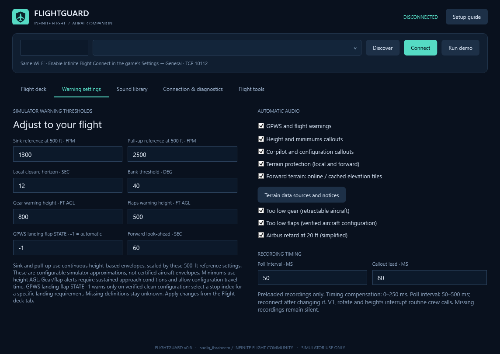

Recorded cockpit and cabin audio, earlier configuration warnings and forward terrain monitoring. Created for sadiq_ibraheem on Infinite Flight Community.
FlightGuard.exe from this extracted, writable folder.No cloud API key or Windows speech is used.
Default gear/flap gates are 800/500 ft AGL. Unresolved configuration reminders schedule every 1.8 seconds; a clip finishes before its queued repeat. More urgent GPWS interrupts lower-priority sound.
Gear-extension and flap-travel grace combine with approach/departure history. Takeoff, climb and go-around do not receive misplaced landing-configuration alerts. Severe sink and stall protection remain active. Local terrain checks reject isolated AGL spikes and inconsistent altitude/vertical-speed data. Reasons appear on the flight deck.
GPWS landing flap STATE is an aircraft stop index, not degrees. -1 means automatic verified-clean detection. An explicit state uses actual extension angles when available. Unknown configuration is shown as unverified. Approach-monitor flap settings are separate.

GPS track, speed and vertical speed project a corridor across cached/online elevation. Default horizon: 60 seconds, editable 15–90. Recorded Terrain ahead and Terrain ahead / pull up escalate predicted conflicts.
Initial downloads and failures are visible in status; local closure monitoring continues. External terrain may differ from the game, and predictions are withheld for a current-ground mismatch over 500 ft. Buildings, obstacles and runway geometry are not modelled. This is a simulator approximation, not certified TAWS.
Terrain sources, cache and notices. Online requests include geographic tile coordinates; flight recordings/API keys are not sent.
Flight tools → Cabin. Park with brake set and below 1 kt: boarding starts after three seconds. Manual new-leg and boarding-complete controls are available. Taxi/safety, cabin preparation and arrival follow observed history. Joining airborne skips boarding. Actual tug, passenger, door and runway status are not inferred.
Cabin volume is separate. GPWS interrupts cabin audio. Cabin stays quiet during takeoff/go-around and below 1,500 ft airborne. Shared recordings can retain original aircraft/airline wording.
Cabin controls preview · Local recording/replay, aircraft preferences, approach monitoring, landing estimates and sound-pack repair remain available.
197 WAV mappings; 12 repair packs with 194 directly downloadable originals. Two terrain clips are converted from retained FlightAssistant OGG originals. Shared fallback sources are labelled; exact OEM sets for every aircraft, windshear and spoken go-around recordings remain incomplete. No synthesized speech substitutes.
Live flight testing was deferred by the user. Poll target 50 ms depends on the game/network; software playback submission timing is not acoustic latency.
Application/branding MIT; recordings have separate GPL, LGPL-3.0 and CC BY-NC-SA terms. Retain SoundSources, per-pack notices and provenance. The sound bundle is not an unrestricted commercial library. Audio sources/limitations · Plain-text guide · GitHub